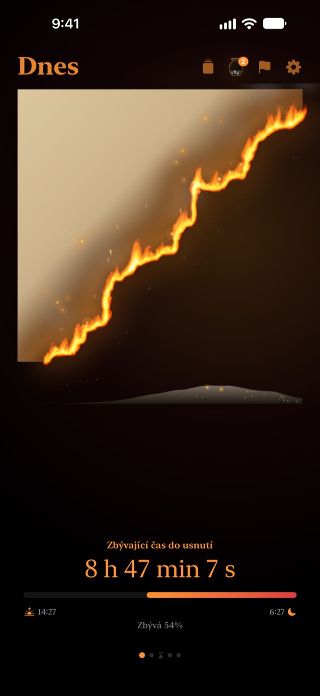
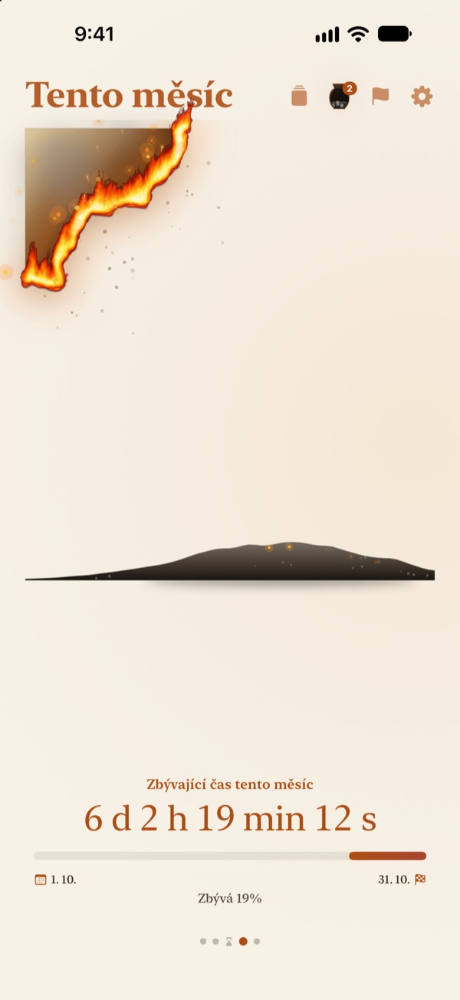
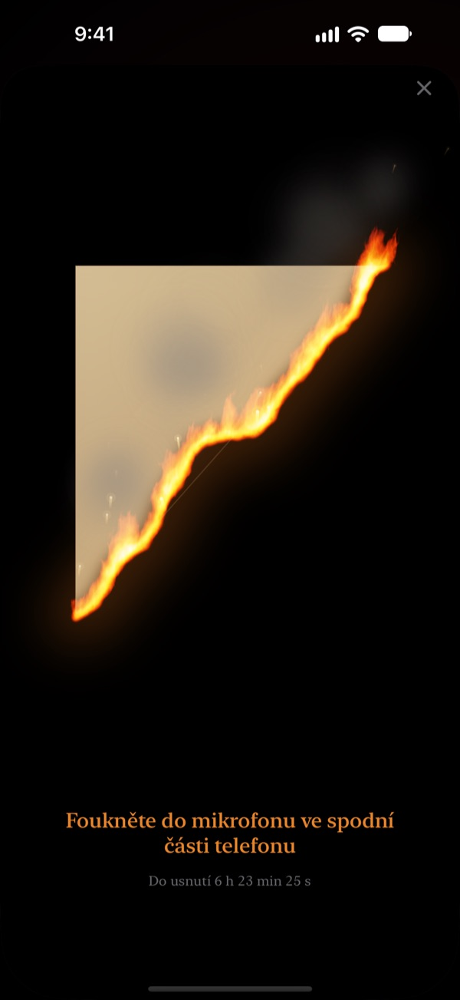
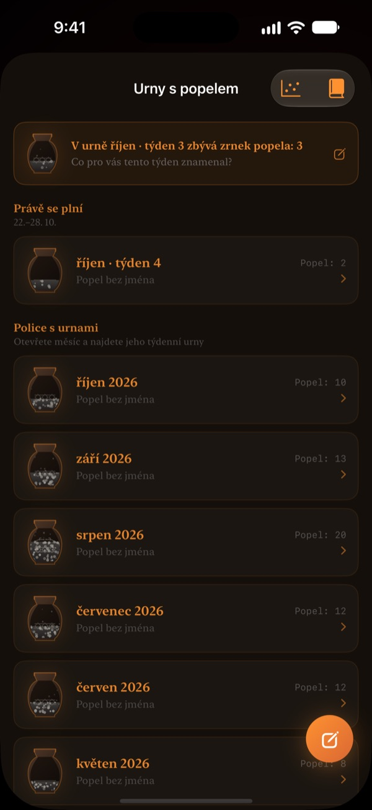

Co zbývá z dneška,
hoří vám před očima
Večer, který v číslech vypadá nevinně, působí jako hořící pergamen úplně jinak. Půl hodiny před spaním foukněte na displej, oheň uhaste a den uzavřete.
Hořící pergamen, sfouknutí plamene i ohlédnutí jsou zdarma.

Zkuste ho sfouknout
Posuňte čas těsně před spaní, pak podržte tlačítko nebo foukněte do mikrofonu.
Taky jste se někdy divili, že už je půlnoc?
Povečeříte, na chvíli si sednete a den je pryč. Čísla na hodinách vypadají každý večer stejně, takže necítíte, jak čas ubývá. Hořící pergamen ukazuje zbytek dne jako pergamen, který dohořívá, abyste si toho všimli dřív, než večer zmizí.
Den, týden i rok dohořívají
Od probuzení až do spaní pergamen pomalu hoří. Stejně uvidíte, kolik zbývá z tohoto týdne, měsíce a roku.
Přidejte cíl s datem jako termín a odpočet poběží souběžně.

Sfoukněte den
Od 30 minut před spaním foukněte na hořící pergamen a oheň uhaste. Využívá se jen síla dechu, nic se nenahrává.
Zbylý úlomek se uschová. Otočte ho a na rub napište řádek o dnešku.

Uplynulý čas zůstává jako popel
Ohlédněte se za dnem jedním řádkem a umístěte ho jako bod do grafu se dvěma osami podle toho, jak jste čas využili. Ohlédnutí se ukládají do týdenních a měsíčních uren s popelem a můžete si je znovu přečíst v Knize ohlédnutí.
Tok popela ukazuje, kam se čas poděl, pomocí grafu rozložení a kalendáře uhlíků.

Začnete ve třech krocích
- 1
Nastavte vstávání a spaní
Klepněte na ozubené kolo vpravo nahoře. Podle toho se pergamen zapálí a zhasne.
- 2
Vyberte období
Přejíždějte mezi dnem, týdnem, měsícem a rokem, nebo nepotřebné stránky skryjte v Nastavení.
- 3
Přidejte widget
Na ploše nebo zamčené obrazovce uvidíte zbývající čas bez otevírání aplikace.
Kde uvidíte zbývající čas
- Den
- Od probuzení do spaní
- Týden · Měsíc · Rok
- Kolik zbývá z tohoto týdne, měsíce a roku
- Volný čas
- Týdenní pergamen hoří jen v hodinách, které si necháváte pro sebe (Pro)
- Termíny
- Čas do data cíle. Jeden zdarma
- Widgety na ploše
- Denní pergamen v malé, střední a velké velikosti. Týden, měsíc, rok a termíny v malé a střední
- Widgety na zamčené obrazovce
- Kruhový, obdélníkový a v řádku
- Dynamic Island · Živá aktivita
- Od hodiny před spaním, nebo celý den. Vyberete či vypnete v Nastavení
Rozbalte Dynamic Island a uvidíte hořící pergamen s úplným odpočtem.
Pergamen je zdarma. Pro uchová víc.
Zdarma
- Pergameny pro den, týden, měsíc a rok
- Sfouknutí plamene a sbírání úlomků
- Jednořádková ohlédnutí, urny s popelem a Kniha ohlédnutí
- Ranní kontrola, volitelně s daty spánku ze Zdraví
- Widgety na plochu a zamčenou obrazovku, Dynamic Island
- Jeden termín
Hořící pergamen Pro
- Pálit jen svůj volný čas
- Motivy: Měsíční hanji, Celadon, Soumrak
- Plameny: Stepní požár, Uhlíky, Prskavka
- Sdílet úlomky jako karty a plakáty
- Exportovat Knihu ohlédnutí do PDF
- Tok popela za dvanáct měsíců
- Neomezené termíny
Není to předplatné. Jeden nákup navždy, včetně všech budoucích funkcí Pro.
Nové zařízení? V Nastavení klepněte na Obnovit nákupy.
Časté dotazy
Widget ukazuje jiný čas než aplikace.
iOS nepřekresluje widgety na ploše každou sekundu. Po otevření aplikace se srovnají. Odpočet po sekundách najdete v Dynamic Islandu a v živé aktivitě na zamčené obrazovce.
Foukám, ale oheň nezhasne.
Sfouknout jde až od 30 minut před spaním. Zkontrolujte, že je povolený přístup k mikrofonu, a zhruba sekundu rovnoměrně foukejte na mikrofon dole na iPhonu. Krátký zvuk nestačí.
Nahrává se můj hlas?
Ne. Měří se jen síla foukání. Žádný zvuk se nenahrává ani neukládá.
Co se zobrazuje, když spím?
Po čase spaní se objeví hořící srdce a ukazuje, kolik noci uplynulo do probuzení. Ráno se aplikace zeptá, jestli jste šli spát včas, a pokud ne, dnešní pergamen začne o tu dobu ohořelý. Po propojení se Zdravím použije zaznamenaný čas usnutí bez ptaní.
Kdy chodí oznámení?
Hodinu před spaním. Pokud nepřijde, zkontrolujte Nastavení > Oznámení > Hořící pergamen.
Vybíjí aplikace hodně baterii?
Odpočet v aplikaci se mění každou sekundu, ale widgety iOS aktualizuje úsporně, takže vliv je malý.
Kde jsou uložená moje data?
Časy vstávání a spaní, termíny, ohlédnutí a urny zůstávají ve vašem zařízení. Vývojář dostává jen anonymní statistiky používání, diagnostiku pádů a zpětnou vazbu, kterou sami pošlete. Žádné reklamy ani sledování.
Je Pro předplatné?
Ne. Zaplatíte jednou a máte ho napořád. Na novém zařízení klepněte v Nastavení na Obnovit nákupy.
Chyby, nápady a další dotazy pište na leeo@kakao.com.